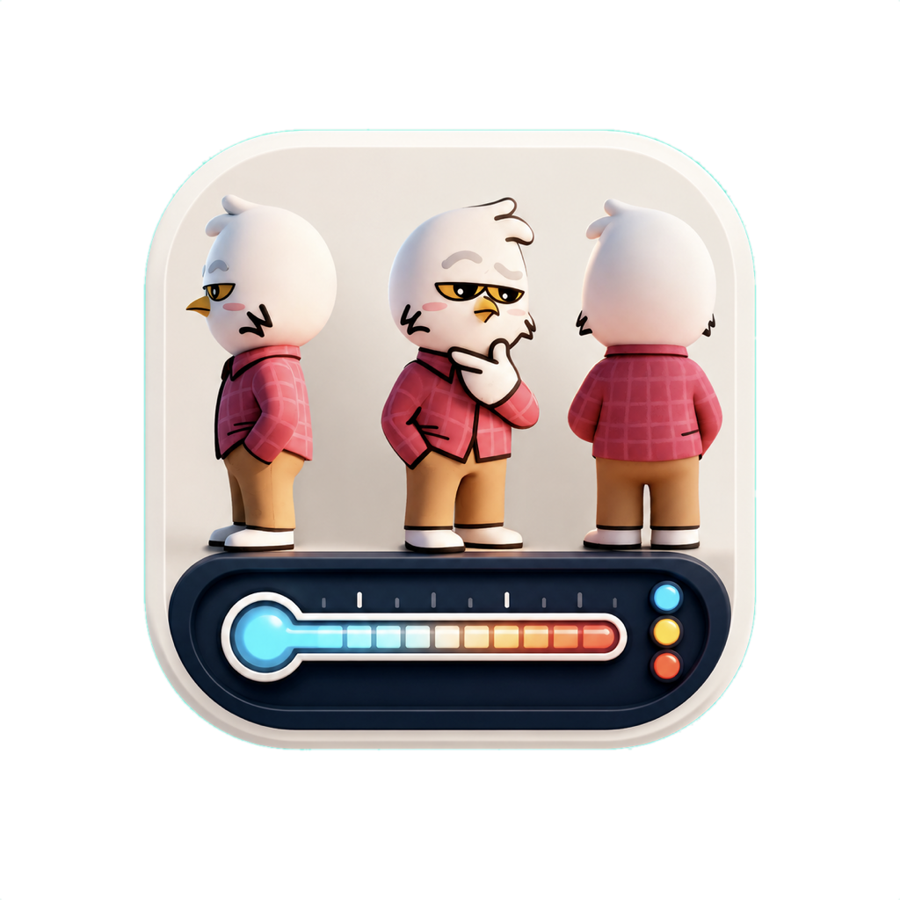
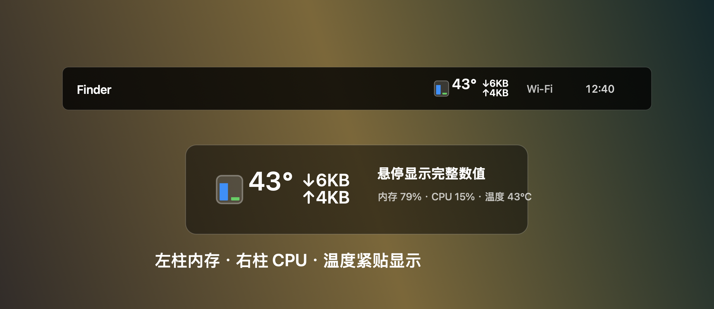

79%
内存占用
用蓝色迷你柱快速判断内存压力，完整容量信息放在悬停提示里。

DDQ's Cyber Thermometer迷你柱显示内存压力、内存占用和 CPU 占用，温度、下载和上传速率紧贴在旁边。鼠标移上去再显示完整数值，平时不打扰工作。
79%
用蓝色迷你柱快速判断内存压力，完整容量信息放在悬停提示里。
15%
右侧绿柱显示实时 CPU 负载，高负载时自动转为更醒目的颜色。
43°C
Apple Silicon 优先读取 PMU tdie 温度，取最高核心温度显示。
↓↑
顶栏显示下载和上传速率，VPN/隧道接口流量也会计入统计。
31
“内存压力”下方显示极简月历，周一开头，可切换上/下月。
✓
点击菜单即可勾选登录后自动启动，不需要额外后台进程。

当前包是本地临时签名，未做 Apple Developer ID 公证。首次打开如遇系统拦截，可右键 App 选择“打开”，或在“系统设置 > 隐私与安全性”里允许打开。